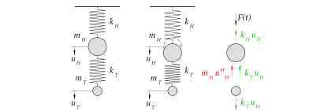
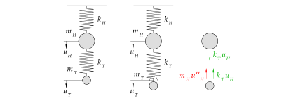

%run style_and_packages.ipynb13 Beispiel: Balken mit Tilger{#sec-tilger}
13.1 Aufgabenstellung
Das Beispiel ist die Weiterführung der Aufgabe in ?sec-ems_untilg. Ein einfacher Balken mit einer Einzelmasse, welcher in dieser Aufgabe mit Tilger ausgestattet ist, ist in Abbildung 13.1 dargestellt. Die Masse erfährt eine dynamische Einwirkung durch die Funktion \(F(t)\).

Gesucht:
- Normierte Eigenform
- Maximale dynamische Verformung mittels stationärer Lösung
- Maximale dynamische Beschleunigung mittels stationärer Lösung
Gegeben:
E, I, m_H, m_T, k_T, L, F_0, omega, delta_11, delta_12 = sp.symbols('E, I, m_H, m_T, k_T, L, F_0, omega, delta_11, delta_12')
t = sp.symbols('t')
k_T, k_H = sp.symbols('k_T, k_H')
omega_n =sp.symbols('omega_n')
phi_11, phi_21, phi_12, phi_22 = sp.symbols('phi_11, phi_21, phi_12, phi_22')params = {E: 200*10**3 *unit.N/unit.mm**2,
I:2*10**8*unit.mm**4,
m_H:2000*unit.N*unit.second**2/unit.m,
m_T:150*unit.N*unit.second**2/unit.m,
k_T:90*10**3*unit.N/unit.m,
L:5*unit.m,
F_0:0.8*10**3*unit.N,
omega:12.6/unit.second,
phi_11:1,
phi_12:1,
zeta:0.0
}
render.dict_to_table(params)| \(E = \frac{200000 \text{N}}{\text{mm}^{2}}\) | \(F_{0} = 800.0 \text{N}\) |
| \(I = 200000000 \text{mm}^{4}\) | \(L = 5 \text{m}\) |
| \(k_{T} = \frac{90000 \text{N}}{\text{m}}\) | \(m_{H} = \frac{2000 \text{N} \text{s}^{2}}{\text{m}}\) |
| \(m_{T} = \frac{150 \text{N} \text{s}^{2}}{\text{m}}\) | \(\omega = \frac{12.6}{\text{s}}\) |
| \(\phi_{11} = 1\) | \(\phi_{12} = 1\) |
| \(\zeta = 0.0\) |
\[ F(t) = F_0 \cdot \sin(\omega\cdot t) = 0.8 \text{kN} \cdot (12.6 \frac{\text{rad}}{\text{s}}\cdot t) \]
13.2 Musterlösung
F_t = F_0 * sp.sin(omega*t)13.2.1 Bemerkung Tilgerauslegung
Die Auslegung des Tilgers kann folgender massen geschehen:
- Tilgermasse \(5\%\) von der Masse des Hauptträgers.
- Optimale Frequenz bestimmen: \[ f_{T,opt} =\frac{f_H}{1+\frac{m_T}{m_H}} \tag{13.1}\]
- Daraus die optimale Steifigkeit bestimmen: \[ k_{T,opt} = (2 \pi f_{T,opt})^2 \tag{13.2}\]
13.2.2 Steifigkeitsmatrix \(\mathbf{K}\)

Wichtig dabei sind die Richtungen der Kräfte. Als Denkstütze gilt folgendes:
- Der Auslenkung um \(u\) wirkt die Federkraft entgegen, welche \(k u\) entspricht.
- Zusätzlich wirkt die Trägheitskraft der Auslenkung entgegen, welche \(m u''\) entspricht.
- Nach der Betrachtung des ausgelenkten Punkts, kann mittels Actio-Reactio-Prinzip das “Stockwerk” ins Gleichgewicht gebracht werden.
- Vorzeichen sind gegen der Bewegungsrichtig positiv.

params['k_H'] = (48 * E*I / (2*L)**3).subs(params).simplify()
K = sp.Matrix([[k_H + k_T, -k_T],[-k_T, k_T]])
render.eq_display(sp.MatrixSymbol('K', 2,2), K,
sp.MatrixSymbol('K', 2,2), K.subs(params),
)\[\begin{equation}\mathbf{K} = \left[\begin{matrix}k_{H} + k_{T} & - k_{T}\\- k_{T} & k_{T}\end{matrix}\right]\end{equation}\]
\[\begin{equation}\mathbf{K} = \left[\begin{matrix}\frac{2010000 \text{N}}{\text{m}} & - \frac{90000 \text{N}}{\text{m}}\\- \frac{90000 \text{N}}{\text{m}} & \frac{90000 \text{N}}{\text{m}}\end{matrix}\right]\end{equation}\]
13.2.3 Eigenvektoren
13.2.3.1 Massenmatrix \(\mathbf{M}\)
Die Massenmatrix folgt dem gleichen Aufbau der Steifigkeitsmatrix. Es gelten die gleichen Vorzeichenregelungen. Die Einträge beziehen sich auf Abbildung 13.3 und Abbildung 13.2.
M = sp.Matrix([[m_H, 0],[0, m_T]])
render.eq_display(sp.MatrixSymbol('M', 2,2), M,
sp.MatrixSymbol('M', 2,2), M.subs(params))\[\begin{equation}\mathbf{M} = \left[\begin{matrix}m_{H} & 0\\0 & m_{T}\end{matrix}\right]\end{equation}\]
\[\begin{equation}\mathbf{M} = \left[\begin{matrix}\frac{2000 \text{N} \text{s}^{2}}{\text{m}} & 0\\0 & \frac{150 \text{N} \text{s}^{2}}{\text{m}}\end{matrix}\right]\end{equation}\]
13.2.3.2 Eigenkreisfrequenzen
Bei einem Mehrmassenschwinger gibt es entsprechend den Freiheitsgraden Eigenkreisfrequenzen \(\omega_n\). Diese lassen sich anhand folgender Gleichung bestimmen:
\[ \det{[\mathbf{K}-\omega_n^2 \mathbf{M}]=0} \tag{13.3}\]
eq_omega = sp.det(K-omega_n**2*M)
omega_n_solve = sp.solve(eq_omega, omega_n)
omega_1 = omega_n_solve[1]
omega_2 = omega_n_solve[3]
render.eq_display('omega_1', omega_1.subs(params).simplify().evalf(3),
'omega_2', omega_2.subs(params).simplify().evalf(3))\[\begin{equation}\omega_{1} = \frac{23.3}{\text{s}}\end{equation}\]
\[\begin{equation}\omega_{2} = \frac{32.6}{\text{s}}\end{equation}\]
13.2.3.3 Eigenvektoren \(\mathbf{\phi}\)
\[ \phi_n = \begin{bmatrix} \phi_{1n}\\ \phi_{2n} \end{bmatrix} \tag{13.4}\] \[ [\mathbf{K}-\omega_n^2 \mathbf{M}]\cdot \begin{bmatrix} \phi_{1n}\\ \phi_{2n} \end{bmatrix} =0 \tag{13.5}\]
Dazu ist die entsprechende Normierung aus der Aufgabenstellung zu berücksichtigen.
phi_1 = sp.Matrix([[phi_11], [phi_21]])
phi_21 = list(sp.solve((K-omega_1**2 *M)*phi_1, phi_21).values())[0]
params['phi_21'] = phi_21.subs(params).simplify()
render.eq_display(sp.simplify((K-omega_1**2 *M)*phi_1),sp.Matrix([[0],[0]]),
sp.MatrixSymbol('phi_1', 2,1),sp.simplify(phi_1.subs(params)).evalf(3))\[\begin{equation}\left[\begin{matrix}\frac{- k_{T} m_{T} \phi_{21} + \frac{\phi_{11} \left(- k_{T} m_{H} + m_{T} \left(k_{H} + k_{T}\right) + \sqrt{k_{H}^{2} m_{T}^{2} - 2 k_{H} k_{T} m_{H} m_{T} + 2 k_{H} k_{T} m_{T}^{2} + k_{T}^{2} m_{H}^{2} + 2 k_{T}^{2} m_{H} m_{T} + k_{T}^{2} m_{T}^{2}}\right)}{2}}{m_{T}}\\\frac{- k_{T} m_{H} \phi_{11} + \frac{\phi_{21} \left(k_{T} m_{H} - m_{T} \left(k_{H} + k_{T}\right) + \sqrt{k_{H}^{2} m_{T}^{2} - 2 k_{H} k_{T} m_{H} m_{T} + 2 k_{H} k_{T} m_{T}^{2} + k_{T}^{2} m_{H}^{2} + 2 k_{T}^{2} m_{H} m_{T} + k_{T}^{2} m_{T}^{2}}\right)}{2}}{m_{H}}\end{matrix}\right] = \left[\begin{matrix}0\\0\end{matrix}\right]\end{equation}\]
\[\begin{equation}\mathbf{\phi}_{1} = \left[\begin{matrix}1.0\\10.3\end{matrix}\right]\end{equation}\]
phi_2 = sp.Matrix([[phi_12], [phi_22]])
phi_22 = list(sp.solve((K-omega_2**2 *M)*phi_2, phi_22).values())[0]
params['phi_22'] = phi_22.subs(params).simplify()
render.eq_display(sp.simplify((K-omega_2**2 *M)*phi_2),sp.Matrix([[0],[0]]),
sp.MatrixSymbol('phi_2', 2,1),sp.simplify(phi_2.subs(params)).evalf(3))\[\begin{equation}\left[\begin{matrix}\frac{- k_{T} m_{T} \phi_{22} + \frac{\phi_{12} \left(- k_{T} m_{H} + m_{T} \left(k_{H} + k_{T}\right) - \sqrt{k_{H}^{2} m_{T}^{2} - 2 k_{H} k_{T} m_{H} m_{T} + 2 k_{H} k_{T} m_{T}^{2} + k_{T}^{2} m_{H}^{2} + 2 k_{T}^{2} m_{H} m_{T} + k_{T}^{2} m_{T}^{2}}\right)}{2}}{m_{T}}\\\frac{- k_{T} m_{H} \phi_{12} + \frac{\phi_{22} \left(k_{T} m_{H} - m_{T} \left(k_{H} + k_{T}\right) - \sqrt{k_{H}^{2} m_{T}^{2} - 2 k_{H} k_{T} m_{H} m_{T} + 2 k_{H} k_{T} m_{T}^{2} + k_{T}^{2} m_{H}^{2} + 2 k_{T}^{2} m_{H} m_{T} + k_{T}^{2} m_{T}^{2}}\right)}{2}}{m_{H}}\end{matrix}\right] = \left[\begin{matrix}0\\0\end{matrix}\right]\end{equation}\]
\[\begin{equation}\mathbf{\phi}_{2} = \left[\begin{matrix}1.0\\-1.3\end{matrix}\right]\end{equation}\]
13.2.3.4 Orthogonalitätsbedingung
Zur Entkoppelung des Systems wird die Orthogonalität der Eigenvektoren kontrolliert. Siehe Kapitel 12.2.2.4 für eine ausführliche Erklärung.
render.eq_display(sp.MatrixSymbol('phi_1',2,1).T*sp.MatrixSymbol('M', 2,2)*sp.MatrixSymbol('phi_1',2,1),(phi_1.T*M*phi_1).subs(params).evalf(3),
sp.MatrixSymbol('phi_2',2,1).T*sp.MatrixSymbol('M', 2,2)*sp.MatrixSymbol('phi_2',2,1),(phi_2.T*M*phi_2).subs(params).evalf(3),
sp.MatrixSymbol('phi_2',2,1).T*sp.MatrixSymbol('M', 2,2)*sp.MatrixSymbol('phi_1',2,1),sp.simplify((phi_2.T*M*phi_1)).subs(params).evalf(7),
sp.MatrixSymbol('phi_1',2,1).T*sp.MatrixSymbol('M', 2,2)*sp.MatrixSymbol('phi_2',2,1),(phi_1.T*M*phi_2).subs(params).evalf(7))\[\begin{equation}\mathbf{\phi}_{1}^{T} \mathbf{M} \mathbf{\phi}_{1} = \left[\begin{matrix}\frac{1.79 \cdot 10^{4} \text{N} \text{s}^{2}}{\text{m}}\end{matrix}\right]\end{equation}\]
\[\begin{equation}\mathbf{\phi}_{2}^{T} \mathbf{M} \mathbf{\phi}_{2} = \left[\begin{matrix}\frac{2.25 \cdot 10^{3} \text{N} \text{s}^{2}}{\text{m}}\end{matrix}\right]\end{equation}\]
\[\begin{equation}\mathbf{\phi}_{2}^{T} \mathbf{M} \mathbf{\phi}_{1} = \left[\begin{matrix}\frac{6.103516 \cdot 10^{-5} \text{N} \text{s}^{2}}{\text{m}}\end{matrix}\right]\end{equation}\]
\[\begin{equation}\mathbf{\phi}_{1}^{T} \mathbf{M} \mathbf{\phi}_{2} = \left[\begin{matrix}\frac{6.103516 \cdot 10^{-5} \text{N} \text{s}^{2}}{\text{m}}\end{matrix}\right]\end{equation}\]
Es ist eine kleine numerische Differenz zu erkennen welche nicht relevant sind.
render.eq_display(sp.MatrixSymbol('phi_1',2,1).T*sp.MatrixSymbol('K', 2,2)*sp.MatrixSymbol('phi_1',2,1),sp.simplify((phi_1.T*K*phi_1).subs(params)).evalf(3),
sp.MatrixSymbol('phi_2',2,1).T*sp.MatrixSymbol('K', 2,2)*sp.MatrixSymbol('phi_2',2,1),sp.simplify((phi_2.T*K*phi_2).subs(params)).evalf(3),
sp.MatrixSymbol('phi_2',2,1).T*sp.MatrixSymbol('K', 2,2)*sp.MatrixSymbol('phi_1',2,1),sp.simplify((phi_2.T*K*phi_1).subs(params)).evalf(3),
sp.MatrixSymbol('phi_1',2,1).T*sp.MatrixSymbol('K', 2,2)*sp.MatrixSymbol('phi_2',2,1),sp.simplify((phi_1.T*K*phi_2).subs(params)).evalf(3))\[\begin{equation}\mathbf{\phi}_{1}^{T} \mathbf{K} \mathbf{\phi}_{1} = \left[\begin{matrix}\frac{9.7 \cdot 10^{6} \text{N}}{\text{m}}\end{matrix}\right]\end{equation}\]
\[\begin{equation}\mathbf{\phi}_{2}^{T} \mathbf{K} \mathbf{\phi}_{2} = \left[\begin{matrix}\frac{2.39 \cdot 10^{6} \text{N}}{\text{m}}\end{matrix}\right]\end{equation}\]
\[\begin{equation}\mathbf{\phi}_{2}^{T} \mathbf{K} \mathbf{\phi}_{1} = \left[\begin{matrix}0\end{matrix}\right]\end{equation}\]
\[\begin{equation}\mathbf{\phi}_{1}^{T} \mathbf{K} \mathbf{\phi}_{2} = \left[\begin{matrix}0\end{matrix}\right]\end{equation}\]
13.2.4 Modale Analyse
Die Bewegungsgleichung für einen ungedämpften, periodisch, harmonisch angeregten Mehrmassenschwinger lässt sich folgend beschreiben:
\[ \mathbf{M u''(t) + K u = F(t)} \tag{13.6}\]
Die Matrix-Gleichung beschreibt ein System aus Differentialgleichungen. Die Modale Analyse zielt darauf ab, diese zu entkoppeln. Bezogen auf den Mehrmassenschwinger heisst eine Entkoppelung, dass diese in Einmassenschwinger aufgeteilt werden. Dies wird nun schrittweise durchgeführt.
13.2.4.1 Modal- und Spektralmatrix
Mittels der Modal- und Spektralmatrix können die generalisierten Grössen ermittelt werden. Diese sind die Eigenschaften der einzelnen Einmassenschwinger. Die generalisierten Werte besitzen keine physikalische Bedeutung, sie sind abhängig von der Wahl der Eigenvektoren, welche bekanntlich von der Normierung abhängen.
Anhand der Bewegungsgleichung können die generalisierten Grössen bestimmt werden, es gilt:
\[\Phi^T M \Phi u''(t) + \Phi^T K \Phi u(t) = \Phi^T F(t)\]
\[M^*u''(t) + K^* u(t) = F^* (t)\]
Alle \(N\)-Eigenwerte und alle \(N\)-Eigenvektoren können kompakt mit Matrizen ausgedrückt werden:
Phi = sp.Matrix([[phi_1, phi_2]])
Omega = sp.Matrix([[omega_1, 0],[0, omega_2]])
render.eq_display('Modalmatrix', 'Phi',
sp.MatrixSymbol('Phi', 2, 2), Phi.subs(params).evalf(4),
'Spektralmatrix', 'Omega^2',
sp.MatrixSymbol('Omega^2', 2, 2), (Omega**2).subs(params).evalf(4))\[\begin{equation}Modalmatrix = \Phi\end{equation}\]
\[\begin{equation}\mathbf{\Phi} = \left[\begin{matrix}1.0 & 1.0\\10.3 & -1.295\end{matrix}\right]\end{equation}\]
\[\begin{equation}Spektralmatrix = \Omega^{2}\end{equation}\]
\[\begin{equation}\mathbf{\Omega}^{2} = \left[\begin{matrix}\frac{541.7}{\text{s}^{2}} & 0\\0 & \frac{1063.0}{\text{s}^{2}}\end{matrix}\right]\end{equation}\]
13.2.4.2 Generalisierte Grössen
M_star = Phi.T * M * Phi
K_star = Phi.T * K * Phi
F_t_matrix = sp.Matrix([[F_t],[0]])
F_t_star = Phi.T * F_t_matrix
render.eq_display(sp.MatrixSymbol('M^\star', 2,2),sp.simplify(M_star.subs(params)).evalf(5),
sp.MatrixSymbol('K^\star', 2,2),sp.simplify(K_star.subs(params)).evalf(5),
sp.MatrixSymbol('F(t)', 2,1),sp.simplify(F_t_matrix.subs(params)).evalf(5),
sp.MatrixSymbol('F(t)^\star', 2,1),sp.simplify(F_t_star.subs(params)).evalf(5))\[\begin{equation}\mathbf{M}^{\star} = \left[\begin{matrix}\frac{17898.0 \text{N} \text{s}^{2}}{\text{m}} & 0\\0 & \frac{2251.6 \text{N} \text{s}^{2}}{\text{m}}\end{matrix}\right]\end{equation}\]
\[\begin{equation}\mathbf{K}^{\star} = \left[\begin{matrix}\frac{9.6959 \cdot 10^{6} \text{N}}{\text{m}} & 0\\0 & \frac{2.3941 \cdot 10^{6} \text{N}}{\text{m}}\end{matrix}\right]\end{equation}\]
\[\begin{equation}\mathbf{F(t)} = \left[\begin{matrix}800.0 \sin{\left(\frac{12.6 t}{\text{s}} \right)} \text{N}\\0\end{matrix}\right]\end{equation}\]
\[\begin{equation}\mathbf{F(t)}^{\star} = \left[\begin{matrix}800.0 \sin{\left(\frac{12.6 t}{\text{s}} \right)} \text{N}\\800.0 \sin{\left(\frac{12.6 t}{\text{s}} \right)} \text{N}\end{matrix}\right]\end{equation}\]
13.2.4.3 Kontrolle der modalen Transformation
omega_1_kontrolle = sp.sqrt(K_star[0] / M_star[0])
omega_2_kontrolle = sp.sqrt(K_star[3] / M_star[3])
render.eq_display('omega_1', omega_1.subs(params).simplify().evalf(3),
'omega_1_modal', omega_1_kontrolle.subs(params).simplify().evalf(3),
'omega_2', omega_2.subs(params).simplify().evalf(4),
'omega_2_modal', omega_2_kontrolle.subs(params).simplify().evalf(4))
\[\begin{equation}\omega_{1} = \frac{23.3}{\text{s}}\end{equation}\]
\[\begin{equation}\omega_{1 modal} = \frac{23.3}{\text{s}}\end{equation}\]
\[\begin{equation}\omega_{2} = \frac{32.61}{\text{s}}\end{equation}\]
\[\begin{equation}\omega_{2 modal} = \frac{32.61}{\text{s}}\end{equation}\]
13.2.4.4 Modale Höhen
Die modalen Höhen bestimmen sich aus Gleichung 13.7:
\[ H_n = \frac{L_n^\theta}{L_n} \tag{13.7}\]
\[ L_n = \phi_n^T \cdot \mathbf{M 1} \tag{13.8}\]
\[ L_n^\theta = \sum_{j=1}^N H_j \cdot m_j \cdot \phi_{jn} \tag{13.9}\]
Wie sind modale Höhen mit diesem Beispiel zu bestimmen?
13.2.5 Stationäre Antwort
Die stationäre Antwort wird mittels des Vergrösserungsfaktors bestimmt.
Die entkoppelte Differentialgleichung ist nun die folgende:
\[ m^\star_1 q_1''(t) + k^\star_1 q_1(t) = F^\star_1(t) = F^\star_1 \sin(\omega t) \tag{13.10}\]
\[ m^\star_2 q_2''(t) + k^\star_2 q_2(t) = F^\star_2(t) = F^\star_2 \sin(\omega t) \tag{13.11}\]
Lösen lässt sich dies mit dem bekannten Ansatz:
\[ q_n(t) = A_n \sin(\omega t) + B_n \cos(\omega) \tag{13.12}\]
Hier wird jedoch mit dem Vorgehen des Vergrösserungsfaktors verfahren:
13.2.5.1 Verformung
zeta = sp.symbols('zeta')
V_1_omega = 1/(sp.sqrt((1-(omega/omega_1)**2)**2 + (2*zeta*(omega/omega_1))**2))
q_1_stat = F_0 / K_star[0]
q_1_max = q_1_stat*V_1_omega
render.eq_display('V_1(omega)', '1/(sqrt((1-(omega/omega_1)**2)**2 + (2*zeta_*(omega/omega_1))**2))',
'V_1(omega)', V_1_omega.subs(params).simplify().evalf(3),
'q_1_stat', unit.convert_to(q_1_stat.subs(params).simplify().evalf(3), unit.mm),
'q_1_max', 'q_1_stat * V_1(omega)',
'q_1_max', unit.convert_to(q_1_max.subs(params).simplify().evalf(3), unit.mm),)\[\begin{equation}V_{1}{\left(\omega \right)} = \frac{1}{\sqrt{\frac{4 \omega^{2} \zeta_{}^{2}}{\omega_{1}^{2}} + \left(- \frac{\omega^{2}}{\omega_{1}^{2}} + 1\right)^{2}}}\end{equation}\]
\[\begin{equation}V_{1}{\left(\omega \right)} = 1.41\end{equation}\]
\[\begin{equation}q_{1 stat} = 0.0825 \text{mm}\end{equation}\]
\[\begin{equation}q_{1 max} = q_{1 stat} V_{1}{\left(\omega \right)}\end{equation}\]
\[\begin{equation}q_{1 max} = 0.117 \text{mm}\end{equation}\]
V_2_omega = 1/(sp.sqrt((1-(omega/omega_2)**2)**2 + (2*zeta*(omega/omega_2))**2))
q_2_stat = F_0 / K_star[3]
q_2_max = q_2_stat*V_2_omega
render.eq_display('V_2(omega)', '1/(sqrt((1-(omega/omega_2)**2)**2 + (2*zeta_*(omega/omega_2))**2))',
'V_2(omega)', V_2_omega.subs(params).simplify().evalf(3),
'q_2_stat', unit.convert_to(q_2_stat.subs(params).simplify().evalf(3), unit.mm),
'q_2_max', 'q_2_stat * V_2(omega)',
'q_2_max', unit.convert_to(q_2_max.subs(params).simplify().evalf(3), unit.mm))\[\begin{equation}V_{2}{\left(\omega \right)} = \frac{1}{\sqrt{\frac{4 \omega^{2} \zeta_{}^{2}}{\omega_{2}^{2}} + \left(- \frac{\omega^{2}}{\omega_{2}^{2}} + 1\right)^{2}}}\end{equation}\]
\[\begin{equation}V_{2}{\left(\omega \right)} = 1.18\end{equation}\]
\[\begin{equation}q_{2 stat} = 0.334 \text{mm}\end{equation}\]
\[\begin{equation}q_{2 max} = q_{2 stat} V_{2}{\left(\omega \right)}\end{equation}\]
\[\begin{equation}q_{2 max} = 0.393 \text{mm}\end{equation}\]
13.2.5.1.1 Effektive Deformation
Die effektiven Grössen resultieren durch Multiplikation mit dem Eigenvektor. Für die erste Eigenkreisfrequenz:
u_1_stat = q_1_max*phi_1
u_2_stat = q_2_max*phi_2
u_stat = u_1_stat + u_2_stat
render.eq_display("u_1_stat","q_1_max*phi_1",
'Matrix([[u_11stat],[u_21stat]])',unit.convert_to(u_1_stat.subs(params).evalf(3),unit.mm))\[\begin{equation}u_{1 stat} = \phi_{1} q_{1 max}\end{equation}\]
\[\begin{equation}\left[\begin{matrix}u_{11stat}\\u_{21stat}\end{matrix}\right] = \left[\begin{matrix}0.117 \text{mm}\\1.2 \text{mm}\end{matrix}\right]\end{equation}\]
Sowie für die zweite Eigenkreisfrequenz:
render.eq_display("u_2_stat","q_2_max*phi_2",
'Matrix([[u_12stat],[u_22stat]])',unit.convert_to(u_2_stat.subs(params).evalf(3),unit.mm))\[\begin{equation}u_{2 stat} = \phi_{2} q_{2 max}\end{equation}\]
\[\begin{equation}\left[\begin{matrix}u_{12stat}\\u_{22stat}\end{matrix}\right] = \left[\begin{matrix}0.393 \text{mm}\\- 0.509 \text{mm}\end{matrix}\right]\end{equation}\]
Durch Addition der beiden Verformungen: Sollte hier die SRSS-Regel verwendet werden?
render.eq_display("u_stat" , "u_1_stat + u_2_stat",
'Matrix([[u_1max],[u_2max]])',unit.convert_to(u_stat.subs(params).evalf(3),unit.mm))\[\begin{equation}u_{stat} = u_{1 stat} + u_{2 stat}\end{equation}\]
\[\begin{equation}\left[\begin{matrix}u_{1max}\\u_{2max}\end{matrix}\right] = \left[\begin{matrix}0.51 \text{mm}\\0.693 \text{mm}\end{matrix}\right]\end{equation}\]
13.2.5.2 Beschleunigung
V_a1_omega = omega**2 / omega_1**2 * V_1_omega
q_2_1_max = F_0 / M_star[0] * V_a1_omega
render.eq_display("V_a1_omega" , "omega**2 / omega_1**2 * V_1_omega",
'V_a1(omega)', V_a1_omega.subs(params).simplify().evalf(3),
'Derivative(q_max,t,2)', q_2_1_max.subs(params).simplify().evalf(3))\[\begin{equation}V_{a1 \omega} = \frac{V_{1 \omega} \omega^{2}}{\omega_{1}^{2}}\end{equation}\]
\[\begin{equation}V_{a1}{\left(\omega \right)} = 0.415\end{equation}\]
\[\begin{equation}\frac{d^{2}}{d t^{2}} q_{max} = \frac{0.0185 \text{m}}{\text{s}^{2}}\end{equation}\]
V_a2_omega = omega**2 / omega_2**2 * V_2_omega
q_2_2_max = F_0 / M_star[3] * V_a2_omega
render.eq_display('V_a2(omega)', V_a2_omega.subs(params).simplify().evalf(3),'Derivative(q_max,t,2)', q_2_2_max.subs(params).simplify().evalf(3))\[\begin{equation}V_{a2}{\left(\omega \right)} = 0.176\end{equation}\]
\[\begin{equation}\frac{d^{2}}{d t^{2}} q_{max} = \frac{0.0624 \text{m}}{\text{s}^{2}}\end{equation}\]
13.2.5.2.1 Effektive Beschleunigung
Gleiches Vorgehen wie bei der Deformation.
u_2_1_stat = q_2_1_max*phi_1
u_2_2_stat = q_2_2_max*phi_2
u_2_stat = u_2_1_stat + u_2_2_stat
render.eq_display('Matrix([[Derivative(u_1max,t,2)],[Derivative(u_2max,t,2)]])',u_2_stat.subs(params).evalf(3))\[\begin{equation}\left[\begin{matrix}\frac{d^{2}}{d t^{2}} u_{1max}\\\frac{d^{2}}{d t^{2}} u_{2max}\end{matrix}\right] = \left[\begin{matrix}\frac{0.0809 \text{m}}{\text{s}^{2}}\\\frac{0.11 \text{m}}{\text{s}^{2}}\end{matrix}\right]\end{equation}\]